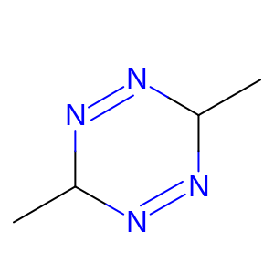

Tautomers represent a particularly thorny problem in cheminformatics. There are several areas where they are of great relevance:
This work addresses the second of these problems, that of finding exact matches of the same molecule in different tautomers. It is intended to be used primarily when adding a new molecule to a structural database, to see if it is already present. It might also be used for the associated question of whether a compound should be synthesised, or whether it already exists in a database and can be obtained from store or purchased. An example of the type of situation that this work is attempting to address is shown in Figure 1 below, for CHEMBL16405 and CHEMBL417634.
|
|
|
Clearly these two compounds are tautomers, and even if it is possible to isolate them as separate chemical samples, it would be helpful if the database was able to link them as closely related structures. The representation in the 3rd column of the table above shows a tautomer-independent representation (the tautomer skeleton) of the two molecules, produced by the current work, that shows the tautomer system and allows them to be identified as possibly being two tautomers of the same compound.
The aim of this work, encapsulated in the program gen_t_skel, is to produce a representation of a compound where areas of tautomerism are identified, and marked in a tautomer skeleton or t_skel. Before a compound is added to a database, as part of the procedure to see if it is a duplicate of a compound already present, its t_skel is created and compared with those already in the database. In the program gen_t_skel, the tautomer system is represented by setting all bonds to 1 and removing the hydrogen atoms that move during the tautomerisation. The structure so produced is output as a canonical SMILES string in which the atoms in the tautomer system appear as atoms with unconventional valences. In the depiction in Figure 1 above, produced by OpenEye's OEDepict toolkit, the unusual valence is shown by a 'dot'.
The basis of the program gen_t_skel is the paper of Thalheim et al. which describes a way of enumerating tautomers. The tautomer skeleton is an intermediate step in the enumeration process. Program gen_t_skel uses a refined version of their algorithm for finding the tautomer skeleton, and a similar method for generating tautomers. Although the tautomers of the compound aren't kept or output by gen_t_skel, they are created during the process as larger tautomer systems are sometimes only discovered by an iterative process. For example, in Figure 2, it is not immediately obvious that Tautomer 2 is a tautomer of Tautomer 1, without inspecting the ketone form, Tautomer 3.

|

|
Thalheim et al. introduced the concept of hydrogen acceptors and donors (HADs) as the key atoms in the tautomerisation process. To convert one tautomer to another, a hydrogen atom is removed from a donor atom and added to an acceptor and the bonds adjusted to restore valences correctly. There is clearly a potential confusion in this nomenclature with hydrogen bond donors and acceptors which are completely different. Better names might have been source and sink or source and destination, but I have continued with their convention.
They also define a bond-path as a path of alternating single and multiple bonds between a donor and an acceptor, or, with the exception of the donor, a path of sp2-hybridised atoms. For these purposes, the kekule form of aromatic systems is used, rather than all bonds being an equivalent "aromatic" type. This causes some difficulties as there is normally more than 1 kekule form for an aromatic system and all have to be allowed for. The bond-path can include consecutive multiple bonds, such as in allenes - this is implied by the allowance for a path of sp2-hydridised atoms.
Thalheim et al. define HADs as follows:
As an example, see Figure 3. In this compound, atoms 2, 4, 6, 7, 13 and 14 are HADs, in two different tautomeric systems. Some of the bond-paths are 2-3-4, 6-5-4-3-2 and 14-15-9-10-11-12-13.

|
Extensive experiments with the algorithm using Chembl (v22) demonstrated a need to refine the HAD definitions. Rule numbers here refer to the numbering of Thalheim et al., for consistency with annotation in the gen_t_skel code. The number in brackets corresponds to the list above.
Rule 4 says that a carbon atom HAD cannot be in an aromatic ring. This is, to some extent, at the mercy of the aromatic model of the underlying cheminformatics toolkit used to implement the algorithm. More of a problem was shown by CHEMBL440484 which contains a O=C1COC=C1 group, which can tautomerise to Oc1cocc1 (see Figure 4). However, Rule 4 forbids the return tautomerisation because the aromatic C atom (atom 2 in conventional numbering schemes) is deemed a non-HAD. To solve this, in 5-membered aromatic systems (which must, in normal circumstances, be heteroaromatic) the 2 and 4 carbon atoms can be HAD acceptors.
 |
 |
 |
Rule 5 says that a carbon HAD must have a bond-path of length 2 to at least 1 heteroatom HAD. This has been extended to allow 1,5 shifts in non-cyclic systems such as CC=CC=O, as shown in Figure 5, so long as the carbon-carbon double bond is not labelled trans. In that case, the H on the end carbon and the carbonyl oxygen can't be brought close enough together to affect the shift.

|
It's also important that in the process we don't form a cyclic allene. So, a carbon atom can't be a HAD donor if it has an unsaturated bond that's not in the bond-path. In this case, that bond-path is removed and the donor flagged as not a HAD.
The Packer in this case is Martin Packer of AstraZeneca. He suggested that it doesn't make sense to add an H atom to an aromatic nitrogen if there's another aromatic nitrogen in the ring, so as to avoid the situation shown in Figure 6. It needs to be a bit more nuanced than that to allow the shuffling of H atoms from N to N in a larger aromatic system, such as that in CHEMBL8387.
 |
 |
 |
Don't form the keto form of a phenol, unless it's a 2- or 4-pyridol or similar. One might think this is explicitly excluded by Rule 4, an aromatic carbon can't be a HAD, but the bond-path might exit the aromatic system to a more distant H atom acceptor, as in CHEMBL11575 shown in Figure 7. The second tautomer is removed by applying the phenol rule.
 |
Some groups just don't belong in tautomer systems, including nitro and azido groups and simple acids and amides. It is certainly difficult to envisage a chemist drawing a structure such as that on the right of Figure 8 rather than that on the left, without there being a good reason for which we should go with her judgement.
 |
Once the HADs have been identified, the bond paths are generated by finding all paths between all pairs of HADs that satisfy the requirements for a bond path, as described above. Some of the HAD definitions depend on the bond paths that are found, so an iterative process is required until the HADs and bond paths are self-consistent. For example, a carbon atom initially identified as a HAD might fail Rule 5 i.e. it must be in a bond path of length 2 to a heteroatom. All bond paths ending with this atom are no longer valid so will be removed. This might have the effect of removing all bond paths containing another HAD and, if so, that HAD must be removed from the list of HADs as it is no longer relevant. Since a bond path must have a donor atom at one end and an acceptor at the other, paths with a donor or acceptor at either end must also be removed.
It is likely, as in Figure 3, that there is more than one tautomer system in the molecule. Thalheim et al. term these connect sets and they are defined as being contiguous sections of the molecule where there are bond paths between all HADs in the connect set. In Figure 3, the two connect sets are separated by the single bond between atoms 7 and 8. Each connect set can be dealt with independently of the others for the purposes of generating the t_skel, which makes the algorithm much more efficient in both memory and CPU time, since the combinations of tautomers in the different connect sets can be ignored. One only needs to consider the connect sets collectively if one needs to generate all possible tautomers that the molecule can adopt.
The tautomer skeleton is formed by removing an H from each donor HAD and subtracting 1 from the bond order of all multiple bonds in the bond-paths. In a simple case this is all that is required to generate the tautomer skeleton. However, it is important that all possible tautomers of a molecule produce the same t_skel, and as can be seen in Figure 2, tautomers 1 and 2 will give different t_skels. To this end, the set of tautomers derived from the HADs and bond-paths is generated (see below) and each of these is passed back into the algorithm. This loop continues until no new tautomers are produced, at which point all the sub-t_skels are combined into a single global one.
In this phase, each connect set is considered separately. Thus, the full set of tautomers, with all cross-combinations of tautomers between connect sets, is not generated. This is to save time and memory as it prevents a potentially large combinatorial explosion.
Each bond path represents a possible tautomer pair of the parent molecule. Generating the tautomers is therefore straightforward:
Thalheim et al.'s original paper did the tautomer enumeration for a connect set in one go, by removing a hydrogen atom from all the donors, reducing the orders of all unsaturated bonds by 1, and adding hydrogen atoms to acceptors in a combinatoric manner. However, occasionally this resulted in tautomers that were not possible to create by single hydrogen atom moves and so are probably not physically relevant - it seems unlikely that two hydrogen atoms from the same conjugated system would be removed at the same time at physiological pH and temperature. A consequence of this behaviour is that tautomers can be generated that when fed back into the algorithm as a fresh input structure don't reproduce the original (a "round-trip failure", of which more later). The algorithm above, whilst probably less efficient in terms of time and memory, is simpler to implement and maintain and, more importantly, doesn't suffer from this issue.
In large highly conjugated molecules the number of tautomers generated can become very large, even when the connect sets are dealt with in isolation. Because of this, there are time and tautomer-count cutoffs which cause early termination of the t_skel generation loop. If one of these is triggered, the global t_skel found so far is returned which is likely to be of some use even if it is not definitive.
At the end of the iterative process detailed above, there will be one or more t_skels, from 1 or more tautomers. These need to be combined into a single t_skel applied to the input tautomer. Each t_skel is described as a list of hydrogen atom donors, bonds whose order is to be decremented, and bonds whose order is to be incremented. These are combined into a single set with each atom and bond being included only once. This is the raw t_skel description to be applied to the input structure to make the global t_skel. However, before this is done, some redundancy checks are made.
Firstly, any non-aromatic bonds that are set to one and immediately back to double are removed from both lists as that's a pointless transformation that increases the size of the t_skel to no benefit. Aromatic bonds are ignored because the particular kekule form used to represent an aromatic system as alternating single and double bonds is arbitrary. During the t_skel generation process, some tautomers may have 1 kekule form, others may have another. The pattern of single and double bonds in an individual t_skel may have come from a kekule form not seen in the input structure. It is therefore likely to be valid, and probably represents the propogation of a tautomer "the other way round the ring."
Secondly, the mobile hydrogens are examined. The merging process can sometimes result in Rule 4(3) being broken, such that aromatic carbon atoms are H atom donors. The likely cause of this is a tautomer breaking the aromaticity of a system. If this has happened, the H atom is removed from the t_skel.
In order to assist in the testing, three additional programs were written and are available in the download. One, tt_tauts is a Qt-based graphical program which reads an input file and for shows the input molecule, the t_skel and the tautomers, as seen in Figure 10. The slider down the left hand side controls which molecule is shown, so it allows rapid inspection of structures in a multi-molecule file.
Figure 11 contains some examples of different tautomers and the t_skel the have in common, to give some idea of the types of structures covered by the algorithm. They are all either taken directly from Chembl v22.1 or tautomers or substructures of a structure from there.
| CHEMBL153534 | ||||||
| CHEMBL18048 |  |
 |
An obvious test of the program is that all tautomers of a molecule should produce the same t_skel. One convenient way of testing this is to take all tautomers generated from the input structure, and generate t_skels for them, a so-called round-trip test. The program tt_tauts_batch does this for a multi-molecule input file. Since it is intended for testing only, the output is not especially user-friendly. The crucial lines commence 'AWOOGA' and give the name of the molecule that failed the round-trip along with the number and SMILES string of the tautomer that didn't produce the t_skel, and the SMILES strings of the original and offending t_skels.
A file of 19962 structures were extracted at random from a file of the 1678393 SMILES strings from Chembl v22.1 using the command
awk '{if(rand() < 0.01185) print $0}' chembl_22_1.smi > chembl_22_1_rand_01185.smi
The value 0.01185 was arrived at by trial and error to produce
close to 20000 structures. These were round-trip tested using
the command
./tt_tauts_batch --max-time 300 --max-tauts 2000 -I chembl_22_1_rand_01185.smi > chembl_22_1_rand_01185.out
This specifies a timeout for individual t_skel generation of
300s, and a maximum number of tautomers to be generated of
2000.
Program gen_t_skels was run on the same file of 19962 structures, using the command
./gen_t_skel --max-time 300 --max-tauts 2000 --max-atoms 200 -I chembl_22_1_rand_01185.smi
This has the same cutoffs as for the round-trip testing.
Because of the limit on heavy atoms, 19922 t_skels were produced
at an average time of 0.075s per molecule, with the worst case
being CHEMBL2013210
which took 152s. There were no duplicate t_skels in this set.